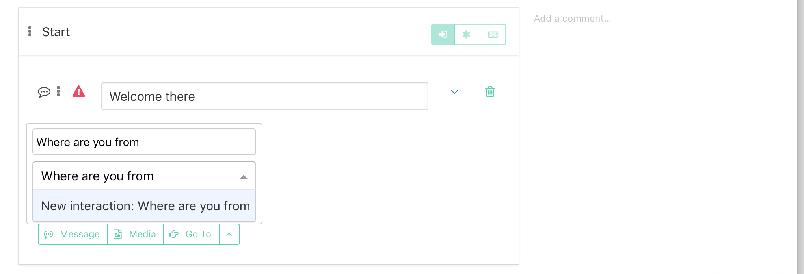

Building a simple conversation
Starting Interaction and fallback
Everything starts in Root block.
Respond to "get started" button
This is one of "hard coded" interactions. Action name is generated from Interaction name - so it's important to not change names of theese interactions
- create an interaction and name it "Start"
- create a Message Response with text "Welcome there"
Response to unexpected user behavior - Fallback (*)
At the end of Root block, there should be an interaction with Asterisk - *. This will intercept all user actions, which are not matched by previous interactions.
It's good to make few response message alternatives, which are randomly picked.
- Create an interaction named "Fallback".
- Enable the Asterisk * button beside the interaction name.
- To make "randomized" response, add "Message" Reaction and under the drop-down arrow beside message text, press "Add random text".

Be able to react to text messages
When user writes "hello", respond with "Hi!"
- Create new interaction, and move it above all Fallback (*) interactions
- Name the interaction - it's good for other collaborators and for analytics
Press the "keyboard button" beside the Interaction name and write down example User messages - Intents
Examples are case insensitive, no interpunction needed, only words are important. The more examples you make, the better recognition will be.
Make a Message Response

Lead the conversation with quick replies
Let's make an Interaction, which explains bots origin.
Create the quick reply
- Find the starting interaction.
- At the most bottom text Response click the "add quick reply suggestion" button.
- Set the text of quick reply.
- Write down the action name and click on "New interaction: Where are you from".

- The new interaction will be created at the end of "Root Block".
Set up the newly created interaction
- Move it above all Fallback (*) interactions.
- Make a Message Response
Make your new Interaction accessible also with text message
- Press the "keyboard button" beside the Interaction name and write down example User messages - Intents